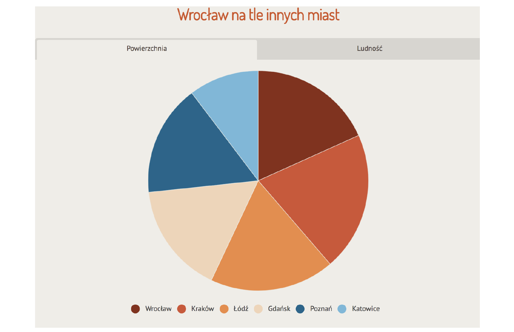
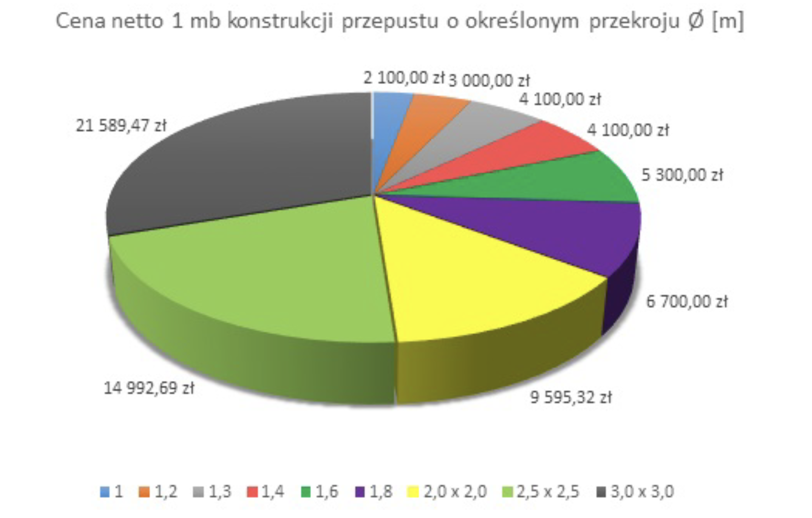

5 Uwaga: mutant!

W tym rozdziale przedstawimy pseudowykresy. Twory, które wyglądają jak wykres, ale przeinaczają, zniekształcają lub utrudniają odczytanie poprawnych zależności obecnych w danych. Skąd się biorą takie potworki? Czasem jest to efekt braku zrozumienia danych, które się prezentuje; czasem braku umiejętności właściwego zaprezentowania danych, nawet jeżeli się je rozumie; a czasem celowego działania, by pokazać coś w pozornie lepszym świetle. Lista złych wykresów jest z pewnością bardzo długa, ale ten rozdział ogranicza się do przedstawienia reprezentantów czterech klas problemów: błędów na osiach, błędnego użycia wykresów kołowych, błędnej kolejności elementów wykresu i błędnego użycia kolorów.
Primum non nocere, czyli z łaciny ,,po pierwsze nie szkodzić’’, to jedna z naczelnych zasad etycznych w medycynie. Jej autorstwo przypisywane jest Hipokratesowi. Reguła ta jest już stosowana ponad dwa tysiące lat w sytuacjach, gdy w grę wchodzi ludzkie życie. Ta uniwersalna zasada może być też przydatna przy tworzeniu wykresów statystycznych. Szukajmy nowych środków przekazywania treści, ale po pierwsze, nie szkodźmy i jej nie zniekształcajmy. Pamiętaj o niej, drogi Czytelniku, i w próbach wizualizacji danych staraj się nie tworzyć mutantów zatruwających umysły toksyczną dezinformacją.
Pisaliśmy wcześniej o zmutowanych wykresach, ale w literaturze funkcjonuje określenie ,,śmieciowy wykres’’ (ang. junk chart), które ukuł Edward Tufte w swojej książce The Visual Display of Quantitative Information (Tufte 2001). W ten sposób określił wykresy zniekształcające dane, ukrywające cenne informacje, wykresy sugerujące coś innego, niż pokazują dane. Niestety dookoła nas takich wykresów jest bardzo dużo. Przez ostatnie 10 lat, działając w fundacji SmarterPoland, zbierałem co roku najgorsze egzemplarze, po to by pod koniec każdego roku robić plebiscyt na najgorszy wykres roku. Przez te 10 lat uzbierała się spora kolekcja. Poniżej przedstawiam najbardziej toksyczne pozycje z tego plebiscytu.
Za chwilę odwiedzimy najciemniejsze kąty piwnicy z nieudanymi eksperymentami wizualizacji danych. Pokażemy wykresy śmieciowe, urągające dobremu smakowi czy logice. To nie jest rozdział dla osób o słabych nerwach. Dalszą lekturę tego rozdziału prowadzisz na własną odpowiedzialność.
5.1 Zmutowane słupki
Wykresy słupkowe są bardzo popularnym i czytelnym sposobem przekazywania informacji. Jest tak pod warunkiem, że przestrzegamy jednej reguły: słupki muszą zaczynać się w zerze. Patrząc na słupki, nasze oko domyślnie porównuje proporcje ich długości, po prostu tak interpretujemy tego rodzaju wykresy. Aby to miało sens, słupki muszą zaczynać się w zerze.
W artykule Drożejąca energia podnosi koszty utrzymania mieszkań, autor bardzo się starał przekonać czytelnika, że ceny energii rosną w przerażającym tempie. Patrząc na poniższy wykres, można odnieść wrażenie, że koszt użytkowania nieruchomości szybko rośnie, co jest zgodne z treścią artykułu. Nie jest jednak zgodne z liczbami przedstawionymi na wykresie. W skali dziewięciu miesięcy wzrost o 3,4% był porównywalny z inflacją, ale wykres sugeruje znacznie poważniejszy wzrost cen, skoro długość słupka, przedstawiająca koszty, zwiększyła się przeszło dwukrotnie.

W roku 2021 jednym z liderów plebiscytu na najgorszy wykres roku był wykres z TVP 1 Wydatki na ochronę zdrowia jako %PKB przedstawiony na rysunku Figure 5.3. Słupki rozpoczynające się od wartości 4% wizualnie zwiększają wzrost wydatków na zdrowie w ostatnich latach. Przyznacie, to 7% wygląda majestatycznie na tle bladych 4,5%–5%. Pierwsze 7 słupków pokazuje okres 7 lat i sprawia wrażenie, że nic się przez lata nie zmieniało, ostatnie 5 słupków pokazuje wybrane lata na przestrzeni przyszłych 12 lat, co dodatkowo sugeruje dynamiczny wzrost. Co się stało z latami 2017-2019 i 2024-2026? Połowa z ostatnich słupków pokazuje prognozy, a nie poniesione wydatki.
Jak bardzo karykaturalny wykres możemy otrzymać, jeżeli słupki nie zaczną się w zerze? Niech ostrzeżeniem będzie poniższy wykres przedstawiający różnice pomiędzy mężczyznami a kobietami w odpowiedziach na pytanie, czy kiedykolwiek brali udział w programach lojalnościowych. Różnica pomiędzy tymi dwiema grupami wynosi dokładnie 0,3 punktu procentowego. Czy to jest faktycznie różnica, którą warto podkreślić w taki sposób?
5.2 Zmutowane koła
Wykresy kołowe mają swoich zdecydowanych przeciwników z uwagi na trudności w dokładnym odczytaniu przedstawionych danych. Jeżeli planujemy prezentację wykresów dla wyrafinowanego odbiorcy, to warto rozważyć inne opcje niż kolorowy tort. Jedyna sytuacja, w której wykres kołowy się jakoś obroni, to przedstawienie części składowych całości. Jest to praktycznie jedyne dozwolone użycie, które nie spowoduje niebezpiecznych konsekwencji. Zapomnieli o tym autorzy poniższych wykresów.

Pierwszy przykład pochodzi z oficjalnej strony miasta Wrocławia. Porównywana jest powierzchnia i ludność pięciu miast na tle Wrocławia. Jakiego wykresu należałoby użyć w tym celu? Z pewnością nie wykresu kołowego. Czy widać na tym wykresie, że Łódź ma nieznacznie większą powierzchnię niż Wrocław, a Gdańsk, podobnie jak Poznań, ma powierzchnię o ponad 10% mniejszą od Wrocławia?
Niestety nie jest to jedyny przypadek stosowania wykresów kołowych do zatruwania umysłów. Na poniższym wykresie różne wycinki koła przedstawiają ceny metra bieżącego rury o różnych przekrojach. Nie dość, że suma tych cen się do niczego nie składa, to jeszcze użycie perspektywy wpływa na rozszerzanie wycinków na górze i dole oraz zwężanie wycinków w środku.

5.3 Zmutowane osie
Niestety, przestępcy wizualni krzywdzą osie wykresów na różne sposoby. Pomimo iż ta zbrodnia wciąż nie jest ścigana prawem, warto wiedzieć, na co zwracać uwagę, by uniknąć nieprzyjemnej sytuacji.
Na powyższym wykresie, który pochodzi ze stron jednej z dużych stacji informacyjnych w Polsce, przedstawiono liczbę przypadków zachorowania na odrę w Polsce. Wniosek nasuwa się sam, zachorowań jest coraz więcej. Ale… dlaczego pokazywane są tylko zachorowania w latach parzystych? Gdy przedstawi się dane kompletne z okresu 13 lat (patrz prawy panel), sytuacja wygląda inaczej.
Jedni pomijają niewygodne lata, inni dodają sobie coś i tu, i tam. Są to równie ohydne zbrodnie przeciwko informacji. Poniżej prezentujemy przykład wykresu z raportu Nauka w Polsce 2013, który przedstawia wydatki deklarowane na B+R (badania i rozwój).
Wykres ten pokazuje znaczne wzrosty deklarowanych wydatków, co w raporcie buduje tło dla rosnącej innowacyjności w przedsiębiorstwach. Niestety, jeżeli przyjrzeć się bliżej, to okaże się, że ostatni słupek przedstawia wydatki zagregowane z czterech lat (a dokładniej dotyczy planów na przyszłe cztery lata). Jeżeli podzieli się planowane wydatki przez cztery lata, to otrzymamy kwotę 1215 mln złotych, a to spadek o około 5% w stosunku do roku 2012. Ta ,,niewinna’’ agregacja na osi poziomej znacząco zmieniła postrzeganie prezentowanych danych.
Kilka lat później Ministerstwo Edukacji Narodowej, już za czasów innego rządu, na Twitterze umieściło wykres przedstawiony na rysunku Figure 5.8. Wymowa jest dosyć oczywista, będzie coraz więcej pieniędzy na podwyżki dla nauczycieli. Co rok więcej, a już pod koniec to tak dużo, że się ledwie mieści na wykresie.
Tylko że ostatni słupek to suma lat 2017-2020 (równie dobrze mogłaby to być suma 2014-2020). Gdy się od tego 6,3 mld zł odejmie liczby przedstawione w poprzednich latach, to się okaże, że w roku 2020 na podwyżkę przeznaczone będzie 1,4 mld zł, a więc ponad dwa razy mniej niż w roku 2019. Liczby niby są, ale gdyby pokazano ten spadek, to trend już nie byłby taki konsekwentny.
Poniższy wykres z dużego portalu informacyjnego przedstawia wysokość emerytury. Problem z tym wykresem polega na wyborze przedziałów prezentowanych na osi poziomej. Odpowiadają one bardzo różnym zakresom, czasem 100 zł, czasem 200 zł, a czasem 500 zł. Przez to wysokości słupków nie są ze sobą porównywalne. Ktoś mógłby go nieopatrznie odczytać tak, że najwięcej osób dostaje najwyższą emeryturę, powyżej 3,5 tys. zł. Można jednak dobierać inne przedziały na osi poziomej, by otrzymać inną historię.
Wykresy często są wykorzystywane do pokazania zmian w czasie. Należy jednak pamiętać, że czas zawsze powinien biec w prawą stronę, inaczej można zaprowadzić czytelnika na manowce.
Poniższy wykres z 2015 roku przedstawia wyniki sondażu preferencji przed wyborami prezydenckimi. Czy wyniki sondaży dla Bronisława Komorowskiego są lepsze niż w poprzednim miesiącu, czy gorsze? Przykład ten w jaskrawy sposób pokazuje, jak ważną rolę odgrywa kolejność słupków na wykresie. Jeżeli czytamy ten wykres, nie zagłębiając się w legendę, można odnieść wrażenie, że poparcie dla Bronisława Komorowskiego rośnie. Jednak gdy przyjrzeć się legendzie, okazuje się, że prawy, niebieski słupek to poparcie w styczniu, a lewy – w lutym.
Poniższy wykres pochodzi z roku 2020 z głównych wiadomości prezentowanych na kanale TVP 1. Prezentuje zmianę bezrobocia, ale i tutaj czas zamiast w prawo biegnie w lewą stronę. Mniej uważny odbiorca może odnieść wrażenie, że bezrobocie spadło, choć w rzeczywistości wzrosło o 0,9 punktu procentowego.
5.4 Zmutowane kolory
Kolory to bardzo potężna przyprawa na wykresach. Ważne jest jednak, by ją rozsądnie wykorzystywać. Reguła, której trzeba się trzymać, to zaznaczanie podobnymi kolorami podobnych rzeczy, a różnymi kolorami różnych rzeczy.
Wykres na rysunku Figure 5.12 pochodzi z portalu Rzeczpospolita i może sugerować, że mniej niż połowa (49%) pytanych uważa, że zwężanie ulic w Warszawie to dobry pomysł. Być może pierwsze wrażenie byłoby inne, gdyby obie części kodujące liczbę osób wspierających ten pomysł zaznaczyć podobnym kolorem (byłoby 17% + 49%), a jedyną odpowiedź przeciwną oznaczyć kontrastującym kolorem.
Proszę, proszę, co za niespodzianka – ponad 4 razy więcej osób uważa, że warto zwęzić ulice niż że to dyskryminacja kierowców. Ale ten wykres tej proporcji nie uchwycił najlepiej. Winne są tym razem źle dobrane kolory.
5.5 Zadania
Wpisz w wyszukiwarce internetowej słowo ,,raport’’ i otwórz kilka pierwszych linków. Zazwyczaj nowsze dokumenty są wyżej w wynikach, więc zapewne znajdzie się jakiś nowy rządowy raport lub coś z NBP lub innego źródła. Czas się przyjrzeć bliżej zawartości.
- Poszukaj w znalezionym raporcie wykresu słupkowego. Czy słupki zaczynają się od zera? Czy ich długości ułatwiają szybsze zrozumienie kluczowych informacji na wykresie?
- Poszukaj w znalezionym raporcie wykresu kołowego. Czy wycinki koła odpowiadają częściom całości? Czy patrząc na same wycinki wykresu kołowego, łatwo jest dostrzec, jaką historię ten wykres przedstawia?
- Spójrz na wykres na marginesie, przedstawia on średni wzrost kobiet w różnych krajach. Czy dane przedstawione są poprawnie? Jaki jest z nimi problem?
Jeżeli chciałbyś dowiedzieć się więcej o błędnych wykresach zniekształcających rzeczywistość, to może zainteresować Cię esej Info-pomyłka z książki Odkrywać! Ujawniać! Objaśniać!